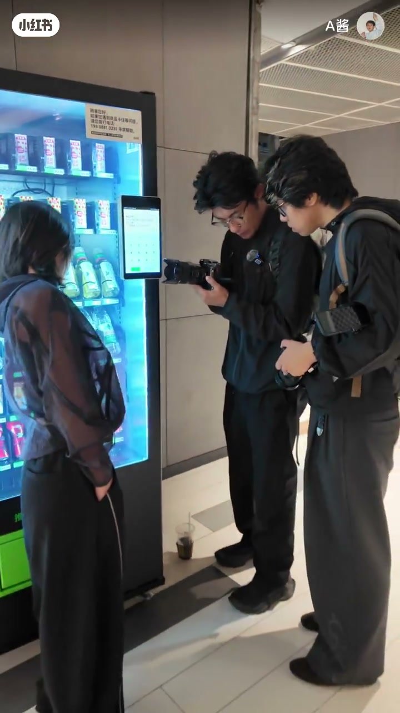
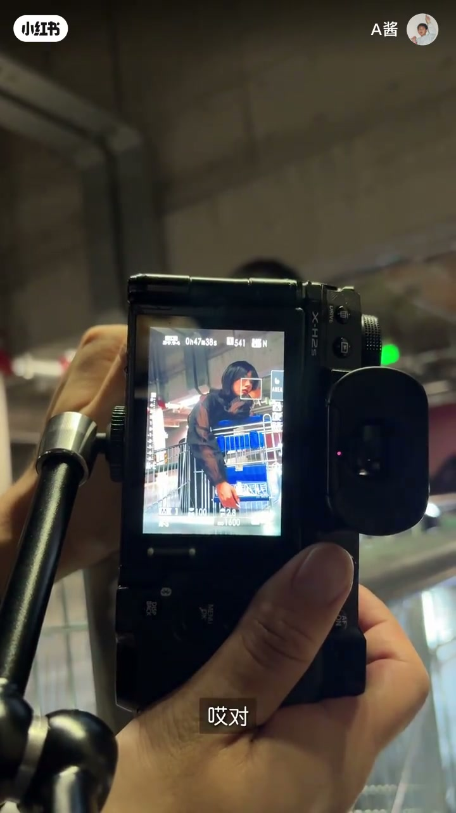
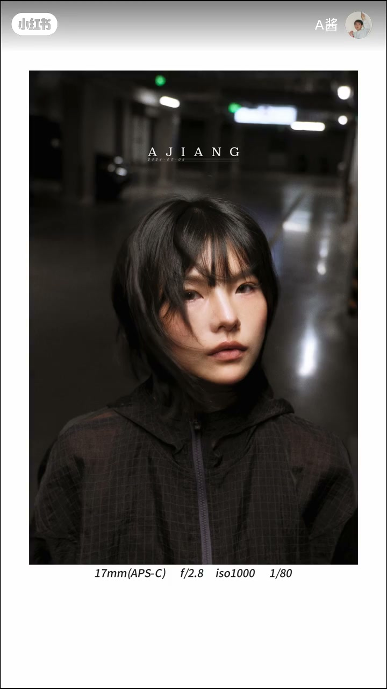
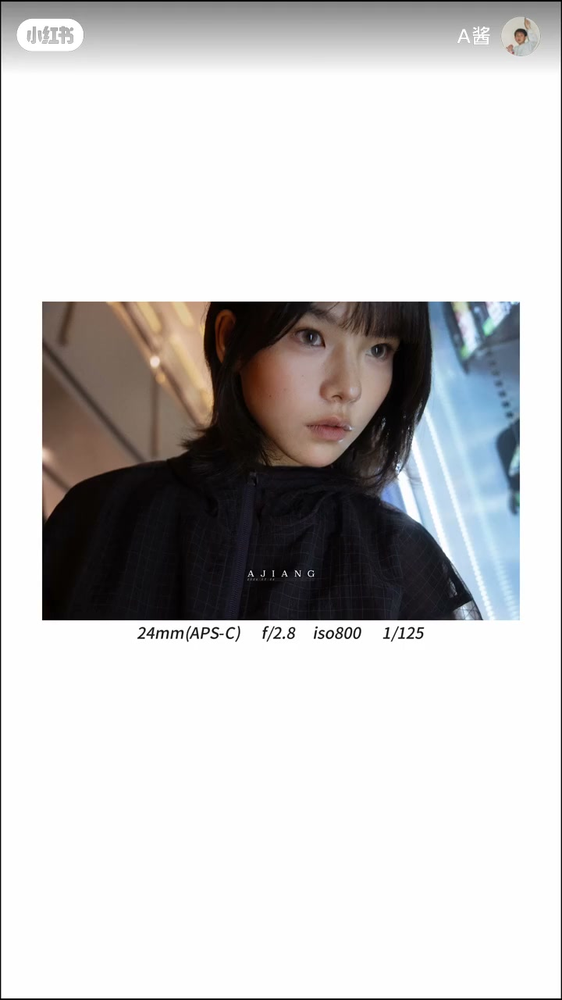

内容要点
《从0开始学摄影》第十四期，A 酱邀请嘉宾 Nick 老师实拍教学：在贩卖机、扶梯背面、停车场等日常环境就地拍摄，讲解拍照不挑环境、人像侧重点在人物、构图如何避开干扰物、以及利用长条顶光拍摄证件照风格。
知识结构
[00:00→00:29]
拍摄理念
贩卖机、扶梯背面、停车场都能拍，拍照不挑环境；拍人像侧重点在人物本身，只要人好看哪里都行。
[00:29→01:47]
实拍演示：构图与避干扰
让模特左脸受光，人物不要放最中间，避开粗壮柱子，等后方车辆带来眩光，镜头干扰时让模特低头。
[01:47→03:11]
顶光环境利用
顶光下光线是长条形状，让模特慢慢后退观察脸部光线变化；证件照风格要完全关注眼神；遇到有线条的墙先给侧面营造侧光。
[03:11→03:41]
收尾预告
计划做一集后期调色分享，更详细拍摄策划会发粉丝群。
总结
街头人像心法：①拍人像侧重点在人物本身，场景够用就行 ②构图避免干扰物抢视线 ③顶光下利用长条光、关注眼神 ④侧光能制造明暗过渡更立体。
理念：拍照不挑环境
在哥们的帮助下联系到 Nick 老师。贩卖机、扶梯背面、甚至停车场都能拍，拍照不挑环境。拍风光要场景好看，拍人像侧重点在人物本身，只要人好看哪里都行。

实拍：构图与避干扰
让模特左脸轻轻受一点光，人物不要完全放最中间。避开粗壮柱子，等后方车辆带来眩光效果。构图中人中位置有干扰时让模特低头，视觉重心就到眼神上。

顶光与侧光利用
顶光虽然是顶光，但它是长条形的光。让模特慢慢往后移，观察脸上光线的变化，拍出证件照一样的照片但要完全关注眼神。遇到有线条的墙面，先给侧面，营造侧光，脸上有明暗对比和过渡。

收尾预告
分享一个试镜技巧：你不要动，对好焦再拍。最后预告会做一集后期调色分享，详细拍摄策划发到粉丝群，并回顾这次学习的成果。
